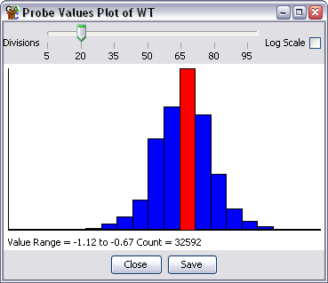

The probe value histogram is a quick way to get an impression of the distribution of probe values in your data.

You can generate this view by right clicking (or apple+clicking) on one of the DataStores in the Data View. You then select Probe Value Histogram from the popup menu.
You can change the number of bins in your histogram by dragging the slider at the top of the window. You may find that because probe values are often integers and that the bins operate on fractional numbers you may see bins which are suddenly larger or smaller than their neighbours. Playing around with the number of bins should allow you to get a smooth distribution.
If you have a large range of values in your data you can choose to plot the histogram on a log scale by checking the box on the right.
If you put your mouse over any bin you will see the range and count for that bin appear in the status bar at the bottom.
You can zoom into the plot by dragging a box in the plot area. To zoom out again press the right mouse button (apple+click on a mac)